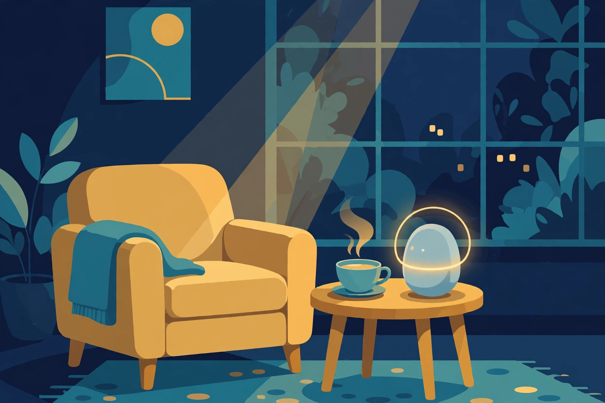
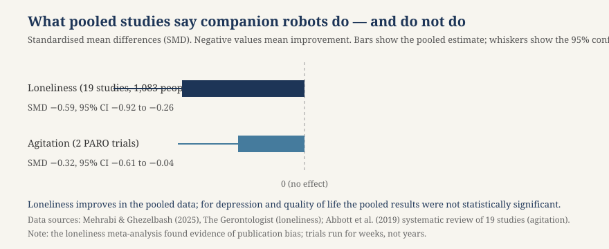

Article 53 · Empathic.X · AGI Future Foundation
Care and Companionship
There is a room in a care home in Queensland, Australia, where a baby harp seal sits on a resident’s lap.
Where empathic machines help — and where a human is irreplaceable
Empathic.X (W3 Series 2) — long-form article 3 of 3

Illustration (generated image, not a photograph): a quiet room with a small companion form — a picture of the idea of machine companionship, not of a real product or a real person.
There is a room in a care home in Queensland, Australia, where a baby harp seal sits on a resident’s lap. It is not a real seal. It is a robot called PARO, covered in soft white fur, fitted with tactile sensors, and programmed to respond to touch and sound — to blink, to move its head, to make small sounds, to learn its own name. The resident strokes it. A researcher watches and records: how long the resident looks at it, how much they talk, whether they smile. In another room, a resident holds an identical plush seal with the robotics switched off. In a third, a resident receives usual care. The difference between those three rooms is the whole subject of this article.
Loneliness in later life is one of the most consequential and least solved problems in ageing. What lonely people lack is not company in the abstract but connection: being noticed, being known, being touched, being spoken to as a person rather than a patient. Into that gap have come machines designed to offer companionship: robot seals and cats and dogs, tabletop companions that initiate conversation and remind you to take your medicine, humanoid robots that roll into a room and ask how your day was. The question is not whether these machines are charming. They are. The question is whether they help, for whom, for how long, and at what cost to the human care they might replace.
The Foundation’s own article on Empathic.X (article-02-empathic-x.html) asks where the line falls between supporting human empathy and pretending to feel, and when a system should step back and hand a person to a human. Care is where that question stops being abstract. A companion robot sits on a real person’s lap, in a real room, at a real stage of life when the people around them are thinning out. Getting the answer wrong there is not a design error. It is a harm done to someone who cannot easily complain about it.
The machines, as they actually are
It helps to be specific about what exists, because “companion robot” covers machines that do very different jobs. The field’s most studied machine is PARO, a therapeutic robot in the shape of a baby harp seal. The seal shape is deliberate: fewer people have strong expectations of how a seal should behave than of how a dog or a cat should, so the machine is judged on its own terms rather than against a real animal. PARO is fitted with artificial intelligence software and tactile sensors — for touch, sound, light, and temperature — that allow it to respond to being stroked or spoken to. It can show behaviours described as surprise, happiness, and anger, can learn its own name, and learns to respond to words its owner uses frequently. In the United States it holds FDA Class II medical-device status, which means it is regulated as a medical device rather than sold as a gadget. It is designed for supervised care settings, not for unsupervised use at home, and its pricing is institutional.
A second kind of machine is the proactive tabletop companion, of which ElliQ is the best-known example. ElliQ is not a pet. It is a small device that sits on a table, initiates conversation, offers wellness prompts and reminders, makes calls, and suggests activities. It is designed for an older adult living at home, and it is sold with a subscription and US-only support. Its premise is different from PARO’s: not tactile comfort but daily structure — a voice that starts the day, remembers the routine, and notices when the routine breaks.
A third kind is the emotional pet-like companion: Sony’s aibo, a robot dog, and LOVOT, a small warm robot designed to be held and to seek affection. These are closer to pets than to medical devices, and they are bought as companions rather than prescribed as interventions. A fourth kind is the rolling social humanoid, designed for care facilities rather than normal homes, which can move between rooms and interact with several residents. Each body solves a different problem, and the evidence for each is different — which is why the literature has to be read machine by machine, setting by setting, rather than as a verdict on “robots” in general.
None of them understands a person, and none of them feels anything. What they do is narrower and, in the right setting, genuinely useful: they respond predictably to touch and voice, they are always available, and they give a person something to care for. That is the honest case for these machines — availability and predictability, not empathy.
What the evidence says — and how to read it
The evidence base for companion robots is now large enough to summarise, and the summaries disagree with each other in ways that are themselves informative. Read carefully, they converge on a modest, specific claim: these machines measurably reduce loneliness and agitation for the older adults who engage with them, in supervised settings, over weeks — and the evidence for everything else they are marketed on is thin, short-term, or absent.
The field’s flagship study is a cluster-randomised trial by Wendy Moyle and colleagues, published in JAMDA in 2017: 415 residents aged 60 and over across 28 long-term care facilities in Queensland, Australia. Three arms, 15-minute sessions three times a week for 10 weeks. One group got PARO, the therapeutic robot seal. One got an identical plush toy with the robotics switched off. One got usual care. The design is the point: the plush-toy arm separates the effect of the robot from the effect of holding something soft and being given attention. PARO beat the plush toy on engagement — verbal engagement higher by 3.61 points and visual engagement by 13.06 points — and against usual care it reduced neutral affect and increased pleasure. On agitation it improved one measure and showed no difference on the standard agitation inventory. That is a real result, and it is a narrow one: the machine holds attention better than a toy, and it makes the session more pleasurable. It is not a cure for loneliness, and it is not a treatment for dementia.
A 2019 systematic review led by Rebecca Abbott at the University of Exeter Medical School, covering 19 studies of robopets in care homes — including seven randomised trials of five types of pet: the seal PARO, the cats JustoCat and NeCoRo, the dog aibo, and the teddy bear CuDDler — reached a more cautious conclusion. Residents and staff often described benefits, and qualitative studies reported reduced loneliness, entertainment, and increased social contact. But pooled quantitative results did not show statistically significant benefits for loneliness, depression, or quality of life. The one outcome that was statistically significant was a reduction in agitation, from two PARO trials (SMD −0.32, 95% CI −0.61 to −0.04). The authors stressed that not all seniors engage with the simulated pets, and warned that some older adults, families, and nursing staff might actively dislike them. Their conclusion was plain: the evidence comes from studies of low to moderate quality, and more understanding of long-term impact is required before robopets could be considered for routine use.
A newer meta-analysis, by Mehrabi and Ghezelbash in The Gerontologist (2025), paints a brighter picture on one outcome. Nineteen studies, 42 effect sizes, 1,083 older adults, literature searched through October 2024. Pooled effect on loneliness: −0.59 (95% CI −0.92 to −0.26) — a large effect by conventional standards. Two independent syntheses landing at −0.59 and, in a separate 2026 meta-analysis in Archives of Gerontology and Geriatrics, −0.69, is about as much agreement as this literature offers. But the same paper names the gaps that matter most to anyone spending money: it remains unclear whether the effects persist over the long term or fade as the novelty wears off, and publication bias is present — Egger’s test returned a significant intercept, which means studies with positive results are more likely to have been published than studies with null ones. Trials in this field run for weeks, not years. A loneliness effect measured at six weeks is not a loneliness effect at six months, and no one has shown the second.
Smaller, more recent trials confirm the pattern of short-term gain and uncertain durability. A 2024 study by Chen, Jones, and Moyle in Clinical Gerontologist examined eight weeks of 60-minute PARO sessions with 52 participants aged 65 to 96, and found significant improvements in depression, loneliness, and engagement — with the process of engagement itself playing an important role in the effect. A 2024 randomised trial in Taiwan with 120 people with mild dementia at four day-care centres found that six weekly 30-minute group PARO sessions improved loneliness, depressive symptoms, and well-being immediately after the programme — but the benefits over usual activities were not statistically established one month later, and the measured heart-rate-variability benefits had also diminished. These are results from facilitated care programmes, not evidence that a robot alone slows dementia or provides the same benefits in an unsupervised home.

Chart: what pooled studies say companion robots do — and do not do. Loneliness improves in the pooled data; for depression and quality of life the pooled results were not statistically significant. Data sources: Mehrabi & Ghezelbash (2025), The Gerontologist; Abbott et al. (2019) systematic review of 19 studies. Note: the loneliness meta-analysis found evidence of publication bias, and trials run for weeks, not years.
The home companion tells a different story again, and it is a story about self-report. The New York State Office for the Aging’s July 2023 programme report on ElliQ says that 95 percent of clients reported that ElliQ was helpful in reducing loneliness and improving well-being, and the initiative has made approximately 900 units available. Those numbers are real, and they are also exactly the kind of numbers that should be read with care: they come from a programme report, not a randomised trial, and they measure what clients say about the device, not a comparison against a control group. A person who has been given a friendly machine that talks to them every morning is likely to say it helps — and they may be right. But without a control arm, without blinding, and without follow-up, the 95 percent figure is evidence of satisfaction, not evidence of effect. Satisfaction is a legitimate outcome. It is not the same as a treatment effect, and a series that confuses the two will overpay for the first and under-deliver on the second.
Engagement is the mechanism — and the warning
Across the studies, one finding recurs so consistently that it should be treated as the mechanism rather than a footnote: the benefits depend on engagement. In the Chen study, the process of engagement with PARO played an important role in the effect — the residents who engaged more benefited more. In the Abbott review, the authors stressed that not all seniors engage with the simulated pets. In the Moyle trial, the robot’s advantage over the plush toy was an advantage in engagement: more looking, more talking, more attention held. The machine does not work by being present. It works by being interacted with — stroked, spoken to, attended to — and the interaction is what produces the pleasure, the reduced agitation, and the social contact with other residents that the qualitative studies report. A robot seal that sits on a shelf is a soft object. A robot seal that a resident holds, talks to, and shows to a neighbour is a social occasion.
That has two consequences. The first is practical: companion robots belong in facilitated programmes, not in cupboards. The trials that show benefits are trials in which a researcher or a care worker runs the session, introduces the robot, stays in the room, and helps the interaction along. None of this is evidence that handing a person a robot and leaving the room will help them. It is evidence that a robot, used as a tool by a human facilitator, can make a session better. The facilitator is doing most of the work. The robot is the occasion for it.
The second consequence is about novelty. No one has shown that the effect survives the first weeks, because the trials do not run long enough. The Mehrabi and Ghezelbash meta-analysis names this as the gap that matters most: it remains unclear whether the effects persist over the long term or fade as the novelty wears off. Anyone who has watched a child with a new toy knows the shape of this curve. A machine that is fascinating in week one can be furniture in week six, and a programme that budgets for the purchase but not for the facilitation, the rotation, the maintenance, and the human time that keeps the interaction alive will get the week-one effect and then wonder where it went. The honest way to buy a companion robot is as an ongoing programme with a human at its centre, not as a device.
There is also the matter of who does not engage, and who actively dislikes these machines. The Abbott review is explicit: some older adults, families, and nursing staff might actively dislike them. A robot seal can feel infantilising to a person who is cognitively intact and lonely for adult conversation, not for a toy. It can feel uncanny to a person who understands perfectly well that it is a machine and resents being offered one as a substitute for a person. It can feel distressing to a family member who sees their parent talking to a seal and reads it as a verdict on how little human attention is available. None of these reactions is a failure of the person. They are information about fit, and a programme that ignores fit — that prescribes the same machine to every lonely resident — will help some people and insult others.
The ethics: deception, substitution, and dignity
The deepest questions about companion robots are not about efficacy. They are about honesty, and they are the questions an empathy series must answer before it builds anything in this space.
The first is deception. PARO is designed to behave as if it were alive: it responds to touch, learns its name, shows behaviours described as surprise, happiness, and anger. A person with dementia may believe, at some level, that the seal is a real animal that likes them. Is that belief a harm, or a comfort? The question has no clean answer, and the people who have thought hardest about it disagree. One view says the belief is a benign illusion, like a doll given to a child, and that the comfort it brings outweighs the falsehood. Another view says that deceiving a person who cannot easily detect the deception — especially a person whose cognitive capacity is declining — is a violation of dignity, even if it makes them smile. A third view, and the one most useful for design, says the question is not whether the machine deceives but whether the deception is disclosed, consented to, and reversible: whether the family and the care team know what the machine is, whether the resident is told in terms they can understand, and whether the machine is ever presented as a replacement for human attention rather than as a tool within it. What is not defensible is a design that depends on the deception — that works only if the person believes the machine is alive — and never says so.
The second question is substitution. A companion robot is cheap compared with a care worker, always available, and never tired. Those are also the properties that make it dangerous as a budget line: a facility under financial pressure can buy robots instead of hiring people, and call the result innovation. The evidence gives no support for that trade. Every trial that shows a benefit is a trial in which humans are present — facilitating, supervising, and providing the care around the robot. There is no trial showing that a robot can replace a human carer, because the things a human carer provides — judgement, moral responsibility, the ability to notice that something is wrong in a way no sensor was programmed to detect — are not the things a robot provides.
The third question is dignity, and it is the most personal. Loneliness in later life is not only a health problem; it is a problem of being seen as a person. A machine that offers companionship can affirm that — it notices you, responds to you, is there when you wake. It can also deny it, if it is offered as the answer to a person’s loneliness in place of the human contact they are actually asking for. The test is simple and should be applied to every deployment: would we accept this for ourselves? If the answer is no, then the machine is not good enough for the people we are asking to accept it, and the programme should say so.
There are also the ordinary, unglamorous questions that decide whether a deployment is responsible: data and privacy (what does a talking companion record, where does the recording go, who can listen to it, and does the resident understand that?), cost and access (who pays, who gets one, and who does not?), and maintenance (who fixes it when it breaks, and what happens to the resident who has bonded with it when it is taken away for repair?). None of these has a verified answer for Empathic.X today, because Empathic.X has no product and no deployment. That is the right time to write the answers down.
Where a human is irreplaceable
It is worth saying plainly what a machine cannot do in care, because the list is the specification for the human role that must be protected.
A machine cannot be accountable. When a care decision goes wrong — a fall missed, a medication confused, a resident’s distress misread — someone must answer for it. A robot cannot be blamed, sued, retrained in the moral sense, or held responsible. Only a human can. Any system that places a machine between a vulnerable person and the human who is responsible for them, without a clear line of accountability, has made care less safe, not more.
A machine cannot exercise judgement. It can follow a rule, and it can be trained on patterns, but it cannot do what a good carer does a dozen times a day: notice that something is off in a way no rule covers, weigh two competing goods, and decide — in the moment, with incomplete information — what this person needs now. Judgement is not pattern-matching. It is the application of values to a particular person in a particular situation, and it is the part of care that cannot be automated without losing the care itself.
A machine cannot grieve, and it cannot accompany grief. The end of life, the loss of a spouse, the slow narrowing of a world — these are the moments when companionship matters most, and they are the moments when a machine’s presence is thinnest. A person who is dying does not need a responsive object. They need a witness: someone who knows who they were, who will remember them, and who will stay. That is not a function. It is a relationship, and it is the one thing in this whole article that no machine, however sophisticated, can provide.
None of this is an argument against companion robots. It is an argument for their proper place: as tools within human care, used by facilitators, in supervised settings, for the residents who engage with them, for the outcomes the evidence supports — reduced loneliness and agitation over weeks, more engagement, more pleasure in a session — and never as a substitute for the human presence that is the actual treatment for loneliness.
What this means for Empathic.X
Empathic.X is a proposed series, and the care literature is the most demanding test of its central question. Here is what the evidence says the design should look like, if the series is ever built.
Start in supervised settings, with a facilitator. The benefits in the literature come from facilitated programmes in care homes and day-care centres, not from devices handed out for unsupervised home use. Any Empathic.X deployment should begin where the evidence is: supervised, facilitated, with a named human running the session and a named human accountable for the resident.
Match the machine to the person. PARO for tactile comfort in dementia care; a proactive companion like ElliQ for daily structure at home; a pet-like robot for the person who wants a pet and understands what it is. One machine for every lonely person is a category error. Fit should be assessed person by person, with the resident’s own preference — including the preference to have no machine at all — treated as decisive.
Measure loneliness properly, over time. Loneliness should be measured with validated scales, against a control, with follow-up at months, not weeks — and the results published, including the nulls. Satisfaction is not an outcome. A 95 percent satisfaction figure from a programme report is not a treatment effect, and it should never be presented as one.
Be honest about what the machine is. The resident, the family, and the care team should know what the machine is and is not. It does not feel. It does not understand. It responds predictably to touch and voice. That honesty is not a marketing disadvantage; it is the condition under which the machine can be trusted, and it is the protection against the deception problem that otherwise shadows the whole field.
Budget for the programme, not the device. The purchase price is the smallest cost. Facilitation, training, maintenance, rotation, and the human time that keeps the interaction alive are the programme, and a budget that covers only the device will get the week-one effect and lose it by week six.
Guarantee the handoff. When a machine detects distress, confusion, or a change in routine, a human must arrive — a named human, through a reachable channel, within a stated time. The handoff is not a feature to be added later. It is the design.
Never substitute. The series should write down, before anything is deployed, that its machines supplement human care and never replace it — and it should refuse deployments where the machine is being bought instead of a person. That is a governance commitment, not a slogan, and it is the one the Steward Council would have to enforce.
| Machine | What it is | Setting in the evidence | What the evidence supports |
|---|---|---|---|
| PARO (robot seal) | Soft seal with tactile, sound, light, and temperature sensors; FDA Class II medical-device status in the US | Supervised care homes and day-care centres, facilitated sessions | Engagement, pleasure, reduced agitation (SMD −0.32); loneliness improved in some trials, not significant when pooled in 2019 |
| ElliQ (tabletop companion) | Proactive device: conversation, wellness prompts, reminders, calls, activities; subscription, US-only support | Older adults at home | High reported satisfaction (95% in a 2023 programme report); no randomised-trial effect established in the sources reviewed |
| aibo (robot dog) | Pet-like robot dog | Care homes, in the Abbott review | Included in the 19-study review; no separate pooled effect reported |
| LOVOT / JustoCat / NeCoRo / CuDDler | Pet-like companions (warm robot, robotic cats, teddy bear) | Care homes, in the Abbott review | Qualitative reports of comfort and bonding; no separate pooled effects reported |
Table: the machines named in the sources reviewed for this article. “What the evidence supports” is limited to what the cited reviews and trials actually found.
Empathic.X’s neighbours make the point concrete. Diagnostic.X (Series 3) depends on listening well and on not reducing a person to a score — a companion robot that reduced a resident to an engagement metric would fail that standard. Cognition.X (Series 1) depends on trust, and trust in care depends on honesty about what a machine is. A series that got care right would be a discipline the whole programme could use: facilitated, honest, measured, and human at the centre.
Glossary
Cluster-randomised trial — A trial in which whole groups (for example, care facilities) rather than individuals are assigned to each arm, used when an intervention is delivered at the level of a facility.
Companion robot — A machine designed to offer social interaction, comfort, or daily structure to a person, especially an older adult. Includes therapeutic robopets (PARO), proactive tabletop companions (ElliQ), and pet-like robots (aibo, LOVOT).
Egger’s test — A statistical test for publication bias in a meta-analysis. A significant result suggests studies with positive findings were more likely to be published.
FDA Class II — A US Food and Drug Administration device classification for moderate-risk medical devices, subject to regulatory controls. PARO holds this status.
Standardised mean difference (SMD) — A measure of effect size used in meta-analysis, expressing the difference between groups in standard-deviation units. Negative values here mean improvement (less loneliness, less agitation).
Frequently asked questions
Do companion robots reduce loneliness?
In pooled studies, yes, over weeks: a 2025 meta-analysis of 19 studies and 1,083 older adults found a pooled loneliness effect of SMD −0.59. But an earlier 2019 review of 19 studies found the pooled benefits for loneliness, depression, and quality of life were not statistically significant, and both reviews note that long-term persistence is unknown and publication bias is present.
Do companion robots help people with dementia?
They can help with engagement, pleasure, and agitation in facilitated sessions. The largest trial (Moyle et al., 2017; 415 residents, 28 facilities) found PARO held attention better than an identical plush toy and increased pleasure. No trial shows a robot slows dementia or replaces human care.
Is it deceptive to give a robot seal to someone with dementia?
It can be, if the person believes it is alive and no one corrects that belief. The defensible approach is disclosure in terms the person can understand, family and care-team knowledge of what the machine is, and use as a tool within human care rather than as a substitute for it.
Does Empathic.X have a product?
No. Empathic.X is a proposed W3 Series 2, not formed, funded, or offered. Its anchored world at 47.440, −179.350 has a published fabric but does not render fully, because its assets are not hosted. This article is research about the care literature the series would work with, not a description of something that exists.
How can I support this work?
Through donations and grants to the AGI Future Foundation, the filed California nonprofit that stewards the series. Donations are not claimed to be tax-deductible, because no IRS 501(c)(3) determination letter is on file. Contact x@agifuturefoundation.org.
References
- Moyle, W., Jones, C., Murfield, J., Thalib, L., Beattie, E., Shum, D., O’Dwyer, S., Mervin, M. C., & Draper, B. (2017). Use of a Robotic Seal as a Therapeutic Tool to Improve Dementia-Related Behaviours: A Cluster-Randomised Controlled Trial. Journal of the American Medical Directors Association, 18(9), 766–773.
- Abbott, R., Orr, N., McGill, P., Whear, R., Bethel, A., Garside, R., Stein, K., & Thompson-Coon, J. (2019). How do “robopets” impact the health and well-being of residents in care homes? A systematic review of qualitative and quantitative evidence. International Journal of Older People Nursing, 14(3), e12239.
- Mehrabi, F., & Ghezelbash, A. (2025). Wired for companionship: A meta-analysis of companion robots and loneliness in older adults. The Gerontologist.
- Chen, S. C., Jones, C., & Moyle, W. (2024). The Impact of Engagement with the PARO Therapeutic Robot on the Psychological Benefits of Older Adults with Dementia. Clinical Gerontologist, 47(5), 909–921. https://doi.org/10.1080/07317115.2022.2117674
- Offbrand Human (summary of the companion-robot evidence base, including the Moyle trial figures, the Mehrabi & Ghezelbash meta-analysis, the Taiwan 2024 trial, and the NYSOFA ElliQ programme report). https://www.offbrandhuman.com/blog/emotional-companion-robots-evidence
- UI44 (2026). Robot Pets for Dementia and Loneliness in 2026 — including PARO’s FDA Class II status, the ElliQ programme figures, and the 2024 Taiwan trial. https://ui44.com/blog/robot-pets-dementia-loneliness-companion-robots-2026
- MobiHealthNews (2019). Meta-analysis: Robopets can reduce loneliness, increase wellness among seniors who engage with them (Abbott et al. review). https://www.mobihealthnews.com/news/meta-analysis-robopets-can-reduce-loneliness-increase-wellness-among-seniors-who-engage-them
- AGI Future Foundation. Empathic.X — Empathy, Emotional Understanding, and Human-Centred Interaction (Article 02). https://www.agifuturefoundation.org/articles/article-02-empathic-x.html
Nothing in this article is legal, tax, or financial advice. Empathic.X is proposed, not formed, funded, or offered. The AGI Future Foundation is a California Nonprofit Public Benefit Corporation, Entity No. B20260196664, Articles filed 2026-04-24; no IRS 501(c)(3) determination letter is on file.